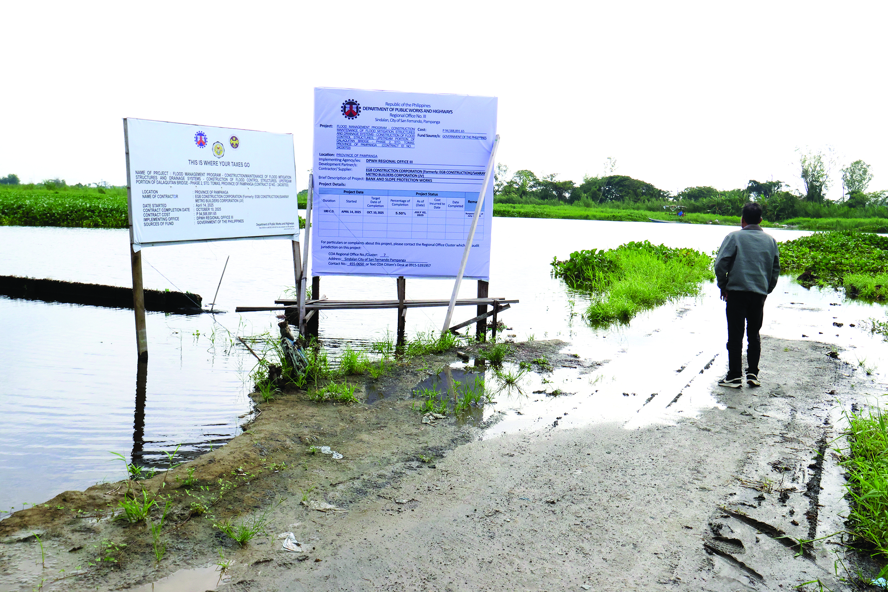

DPWH Unveils New "Floating Bridge" Project That Magically Disappears Every Rainy Season
Our newsroom investigates a case that may or may not exist
MANILA, Philippines — In a groundbreaking leap for both civil engineering and local folklore, the Department of Public Works and Highways (DPWH) proudly inaugurated its latest infrastructure marvel today: a state-of-the-art multi-billion-peso bridge engineered to completely vanish into thin air every single time it rains. While the initial budget of 4.5 billion pesos was completely vaporized during the first drizzle of June, economists note that citizens no longer have to worry about maintenance costs, potholes, or rust
Dubbed the Páanaw-Páanaw Suspension Link, the project is designed to solve severe urban traffic by utilizing advanced, highly adaptable materials that dynamically phase out of existence the moment the first monsoon cloud rolls overhead.
Unlike traditional concrete bridges and flood control measures that stubbornly stand in the way of rising floodwaters and heavy typhoons, this structure smartly removes itself from harm's way, guaranteeing zero structural damage from floods.
According to the lead project consultant, maintaining a bridge is expensive. Unless the bridge simply ceases to exist for six months out of the year.
"You can't have infrastructure decay if the infrastructure doesn't exist," noted one senior budget official while frantically shredding blueprints. "It’s practically a self-demolishing asset. Think of the taxpayer savings on demolition permits alone."
Public Reaction
"I drove across it this morning just fine," said delivery rider Marco Santos. "By 3:00 PM, a thunderstorm hit, I checked my maps, and Google literally told me to 'turn left onto the void.' My delivery cargo is currently floating toward Laguna de Bay, but honestly? The innovation is inspiring."
"At first, I was mad that I drove straight off a 50-foot drop into a swirling vortex of muddy water," said daily motorist Mang Dante, currently drying his clothes on a nearby lamppost. "But then I realized, hey, at least they didn't charge us toll fees while we were falling."